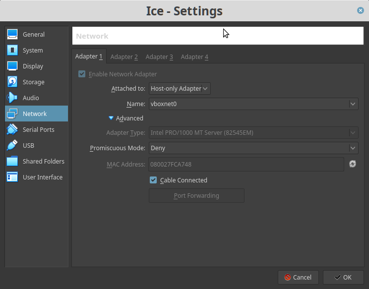

Windows XP SP3
▸ Windows XP SP3
▸ 1. Scan Network
▸ 2. Finding Services and Ports
▸ 3. Search Exploit
▸ 3.1 Impacket
▸ 3.2 Generarte the payload
▸ 3.3 Netcat
▸ 3.4 Fire the exploit
▸ 4. Privilege Escalation
▸ 5. Post-explotiation
▸ 5.1 Get Hashes
▸ 5.2 Dump the hashes
▸ 5.3 Get a Meterpreter
▸ 6. Persistence Backdoor
Difficulty: Intermediate.
Learning:
• Discover network machine.
• Use Nmap to find opened ports & running services.
• Search exploit in Metasploit.
• Generate a payloadd called “ms17-010.exe” with “msfvenom”.
• Use Impacket to send file to the Victime Machine.
• Create a meterpreter.
• Get hashes with “MimiKatz”
• Get access to the victim machine.
• Create a Persistence Backdoor
Download: Get a (legal) copy of Windows XP SP3
Abstract:
Some times Windows XP doesn't respond to “MS08-067 vulnerability”, but instead is vulnerable to “MS17-010”
Install the machine on VirtualBox:
1. Create a New Machine.
2. Fill the “name” field as “Windows XP SP3”
3. Choose “Microsoft Windows” in field “Type”.
4. Choose “Windows XP (32 bits): in field “Version”.
5. Set “Memory Size” to 1024.
6. Choose “Create a virtual hard disk now”.
7. Select “VDI (VirtualBos Disk Image)”.
8. Select “Fixed size”.
9. Choose the location of the file.
10. Set the size of the virtual hard disk to 10GB.
11. Click on “Create”.
12. Select the Machine just created and go to “Settings”.
13. Click on “Storage”, select “Empty”.
14. Select where your “Windows XP ISO” file is in “Optical Drive->Choose Virtual Opticad Disk file”.
15. Click “Start” and the Windows XP installation will start.
16. Follow all the steps to install it.

Conditions of your Machine:
You have to share out some folders on Win XP to run the NBT daemon on TCP 445.
a) Check that our network adaptor has File and Print Sharing installed and enabled.
Control Panel -> Network Connections -> Local Area Connections (Righ Click) -> Properties.
b) Right-click any folder and choose “Properties” to share.

c) You will see a hand sign underneath the shared folder.
Watch your Machine IP.

 Index
Index